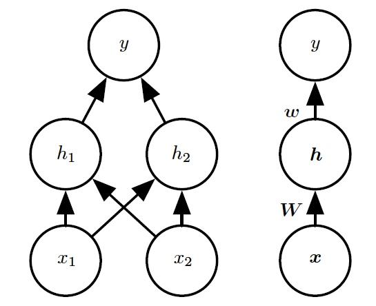

为了使前馈网络的想法更加具体，我们首先从一个可以完整工作的前馈网络说起。
这个例子解决一个非常简单的任务：学习XOR函数。
1. 任务
[success]
任务：使用一个功能完整的前馈网络学习XOR函数。
XOR函数（"异或"逻辑）是两个二进制值x1和x2的运算。
当这些二进制值中恰好有一个为1时，XOR函数返回值为1。
其余情况下返回值为0。
XOR函数提供了我们想要学习的目标函数y=f∗(x)。
我们的模型给出了一个函数y=f(x;θ)并且我们的学习算法会不断调整参数θ来使得f尽可能接近f∗。
在这个简单的例子中，我们不会关心统计泛化。
我们希望网络在这四个点X={[0,0]⊤,[0,1]⊤,[1,0]⊤,[1,1]⊤}上表现正确。
我们会用全部这四个点来训练我们的网络，唯一的挑战是拟合训练集。
2. 第一个模型
[success]
已知：
XOR函数有两个非0即1的输入。只有当前x1、x2中有一个是1时输出为1，其它情况输出为0。
目标：y = f*(x) = XOR(x1,x2)
输出：y=f(x;θ)
训练样本集：X={[0,0]T,[0,1]T,[1,0]T,[1,1]T}
我们可以把这个问题当作是回归问题，并使用均方误差损失函数。
我们选择这个损失函数是为了尽可能简化本例中用到的数学。
在应用领域，对于二进制数据建模时，MSE通常并不是一个合适的损失函数。
更加合适的方法将在\sec?中讨论。
评估整个训练集上表现的MSE损失函数为
J(θ)=41x∈X∑(f∗(x)−f(x;θ))2.
[success]
选择损失函数为MSE
我们现在必须要选择我们模型f(x;θ)的形式。
假设我们选择一个线性模型，θ包含w和b，那么我们的模型被定义成
f(x;w,b)=x⊤w+b.
[success]
选择模型为线性模型
我们可以使用正规方程关于w和b最小化J(θ)，来得到一个闭式解。
[success]
通过闭解形式解得J(θ)的最小化为w = 0, b = 1/2
解正规方程以后，我们得到w=0以及b=21。
线性模型仅仅是在任意一点都输出0.5。
为什么会发生这种事？
[success] 因为这个模型太小了，不足以表达XOR函数。
3. 第二个模型
\fig?演示了线性模型为什么不能用来表示XOR函数。
解决这个问题的其中一种方法是使用另一个模型来学习一个不同的特征空间，在这个空间上线性模型能够表示这个解。
[success]
使用不同特征空间，即输入和输出之间增加一个中间层。这样可以增大模型容量。
具体来说，我们这里引入一个非常简单的前馈神经网络，它有一层隐藏层并且隐藏层中包含两个单元。
见\fig?中对该模型的解释。

这个前馈网络有一个通过函数f(1)(x;W,c)计算得到的隐藏单元的向量h。
这些隐藏单元的值随后被用作第二层的输入。
第二层就是这个网络的输出层。
输出层仍然只是一个线性回归模型，只不过现在它作用于h而不是x。
网络现在包含链接在一起的两个函数：h=f(1)(x;W,c)和y=f(2)(h;w,b)，完整的模型是f(x;W,c,w,b)=f(2)(f(1)(x))。
[success]
中间层：h=f(1)(x;W,c)，其中W是矩阵，x、c、h是向量
输出层：y=f(2)(h;w,b)，其中h、w是向量，b、y是标量
Click to show h = f^{(1)}(x; W, c) \\
\require{AMScd}
\begin{CD}
向量 @>矩阵W，向量c>> 向量
\end{CD}
y = f^{(2)}(h; w, b) \\
\require{AMScd}
\begin{CD}
向量 @>向量w，标量b>> 标量
\end{CD}
完整输出为（1）：
f(x;W,c,w,b)=f(2)(f(1)(x))
3.1. f(1)
f(1)应该是哪种函数？线性模型到目前为止都表现不错，让f(1)也是线性的似乎很有诱惑力。
可惜的是，如果f(1)是线性的，那么前馈网络作为一个整体对于输入仍然是线性的。
暂时忽略截距项，假设f(1)(x)=W⊤x并且f(2)(h)=h⊤w，那么f(x)=w⊤W⊤x。
我们可以将这个函数重新表示成f(x)=x⊤w′其中w′=Ww。
[success]
如果f(1)是一种线性变换，那么还是相当于y是x的线性组合。
显然，我们必须用非线性函数来描述这些特征。
大多数神经网络通过仿射变换之后紧跟着一个被称为激活函数的固定非线性函数来实现这个目标，其中仿射变换由学得的参数控制。
我们这里使用这种策略，定义h=g(W⊤x+c)，其中W是线性变换的权重矩阵，c是偏置。
此前，为了描述线性回归模型，我们使用权重向量和一个标量的偏置参数来描述从输入向量到输出标量的仿射变换。
现在，因为我们描述的是向量x到向量h的仿射变换，所以我们需要一整个向量的偏置参数。
激活函数g通常选择对每个元素分别起作用的函数，有hi=g(x⊤W:,i+ci)。
在现代神经网络中，默认的推荐是使用由激活函数g(z)=max{0,z}定义的整流线性单元或者称为~ReLU~{cite?}，如\fig?所示。
[success]
f(1)通常为这样的形式为h=g(WTx+c)，
g是激活函数，是作用于整个向量的函数，通常默认为ReLU函数。
ReLU = rectified linear unit = 整流线性单元
g(z)=max(0,z)

我们现在可以指明我们的整个网络是
f(x;W,c,w,b)=w⊤max{0,W⊤x+c}+b.
3.2. 结果
我们现在可以给出XOR问题的一个解。
令
Wcw=[1111],=[0−1],=[1−2],
以及b=0。
我们现在可以了解这个模型如何处理一批输入。
令X表示设计矩阵，它包含二进制输入空间中全部的四个点，每个样本占一行，那么矩阵表示为：
X=⎣⎢⎢⎡00110101⎦⎥⎥⎤.
神经网络的第一步是将输入矩阵乘以第一层的权重矩阵：
XW=⎣⎢⎢⎡01120112⎦⎥⎥⎤.
然后，我们加上偏置向量c，得到
⎣⎢⎢⎡0112−1001⎦⎥⎥⎤.
在这个空间中，所有的样本都处在一条斜率为1的直线上。
当我们沿着这条直线移动时，输出需要从0升到1，然后再降回0。
线性模型不能实现这样一种函数。
为了用h对每个样本求值，我们使用整流线性变换：
⎣⎢⎢⎡01120001⎦⎥⎥⎤.
这个变换改变了样本间的关系。它们不再处于同一条直线上了。
如\fig?所示，它们现在处在一个可以用线性模型解决的空间上。
我们最后乘以一个权重向量w:
⎣⎢⎢⎡0110⎦⎥⎥⎤.
神经网络对这一批次中的每个样本都给出了正确的结果。
在这个例子中，我们简单地指定了解决方案，然后说明它得到的误差为零。
[success]
通过公式巧妙设置公式中的参数，可以使得f(x)的结果与XOR完全相同。
问题是如何设置合理的参数？
在实际情况中，可能会有数十亿的模型参数以及数十亿的训练样本，所以不能像我们这里做的那样进行简单地猜解。
与之相对的，基于梯度的优化算法可以找到一些参数使得产生的误差非常小。
我们这里给出的XOR问题的解处在损失函数的全局最小点，所以梯度下降算法可以收敛到这一点。
梯度下降算法还可以找到XOR问题一些其他的等价解。
梯度下降算法的收敛点取决于参数的初始值。
在实践中，梯度下降通常不会找到像我们这里给出的那种干净的、容易理解的、整数值的解。